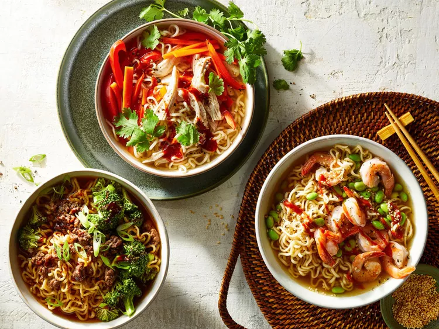

Ramen

How to make Ramen Noodles!
Make yourself a nice and refreshing bowl of delicious noodles!
- 3 cups low-sodium broth
- 1 cup mixed fresh vegetables
- 6 ounces cooked protein
- 1 (3 ounce) package ramen noodles
- 1/8 teaspoon salt
- 1/8 teaspoon freshly ground black pepper
- 1 teaspoon sauce of choice
- Garnish of choice (e.g. green onions)
Steps
- Bring broth to a boil in a small saucepan
- Reduce heat. Add vegetables, protein, and noodles
- Simmer, stirring occasionally, until ramen noodles are tender and ingredients are heated
- Season with salt and black pepper
- Top with sauce and sprinkle with garnish